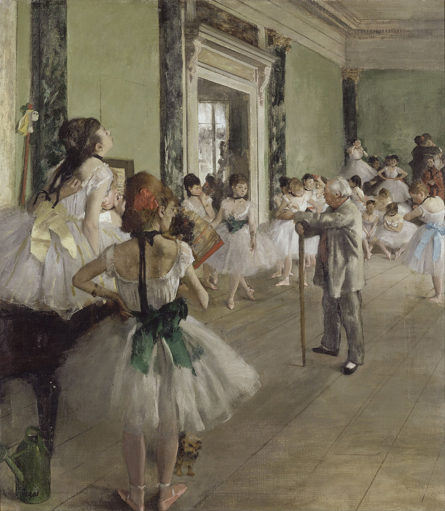
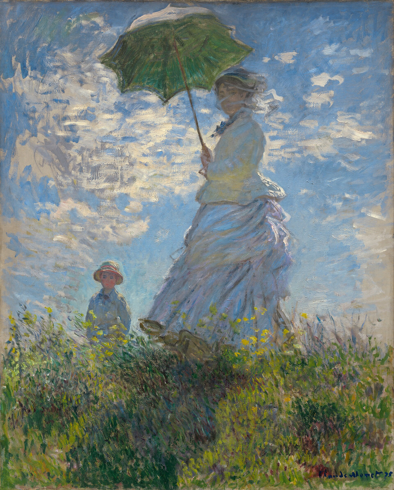
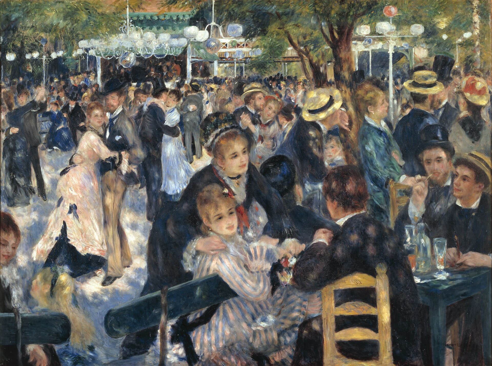

인상주의
빛이 바뀌면, 색도 바뀐다.

루앙 대성당La Cathédrale de Rouen클로드 모네 · 1894 같은 성당을 서른 번 넘게 그렸다. 모네가 그린 것은 돌이 아니라, 그 위를 지나가는 빛이었다.

인상, 해돋이Impression, soleil levant클로드 모네 · 1872 ‘인상주의’라는 이름이 바로 이 그림의 제목에서 나왔다. 안개 낀 항구 위에 뜬 주황빛 해 하나.

무용 수업La Classe de danse에드가 드가 · 1871–1874 무대 뒤 연습실의 한순간을, 사진처럼 비스듬한 시선으로 붙잡았다.

파라솔을 든 여인La Promenade클로드 모네 · 1875 바람과 햇빛 속 산책의 한순간. 빠른 붓질이 흔들리는 풀과 흐르는 구름을 그린다.

물랭 드 라 갈레트의 무도회Bal du moulin de la Galette피에르오귀스트 르누아르 · 1876 나뭇잎 사이로 떨어진 햇빛이 춤추는 사람들의 옷과 얼굴 위에서 반짝인다.